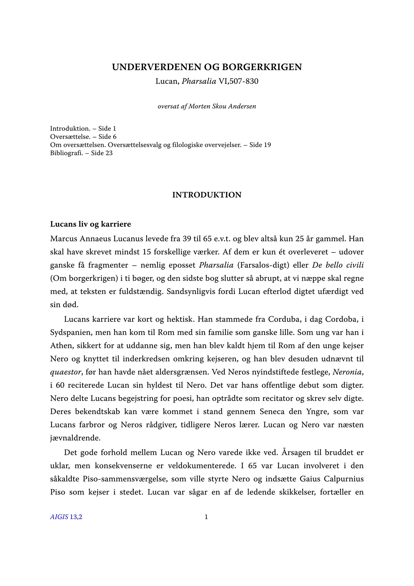
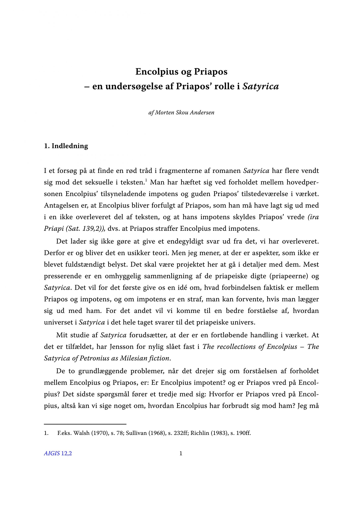

FILOLOGI
Morten Skou Andersen er klassisk filolog, cand. mag. i latin med sidefag i græsk. Han er lektor ved Aurehøj Gymnasium og tidligere ekstern lektor ved Københavns Universitet.
Han beskæftiger sig især med oversættelse af romersk litteratur, fortrinsvis romersk poesi.
Han har færdiggjort en komplet dansk oversættelse af Catuls digte, som efter planen udgives i efteråret 2024.
Han er desuden i samarbejde med Sebastian Maskell Andersen i gang med en oversættelse af Ciceros De amicitia (om venskab).
Ved siden af arbejder han ind imellem på en oversættelse af Lucans epos Pharsalia eller De bello civili (om borgerkrigen), men det er et uhyre langsigtet projekt.
Publikationer
Statius’ Silvae i udvalg (2019)
Statius’ Silvae i udvalg – oversat med udførlige introduktioner og kommentarer af Morten Skou Andersen.
Udgivet af Forlaget Atalante.

Lucan, Pharsalia VI,507-830 (2013)
„Underverdenen og borgerkrigen. Lucan, Pharsalia VI,507-830, oversat af Morten Skou Andersen.”
Artikel publiceret i Aigis 13.2, 2013.

Priapos’ rolle i Satyricon (2012)
„Encolpius og Priapos – en undersøgelse af Priapos’ rolle i Satyrica.”
Artikel publiceret i Aigis 12.2, 2012.
Foredrag
„Fortryllelse og forbandelse. Hekse i romersk skønlitteratur.” Et foredrag om heksen som litterær figur i Horats’ epoder, Lukans Pharsalia og Apulejus’ Det gylde æsel; holdt den 8. marts, 2014 ved Phrontisteriums Seminar, Københavns Universitet.
„Thessala vates vatem eligit. How to read Lucan – an interpretative guide to making sense of Lucan’s Pharsalia.” Foredraget blev holdt for Hic Sunt Leones den 5. December 2013, på CML, Syddansk Universitet Odense.